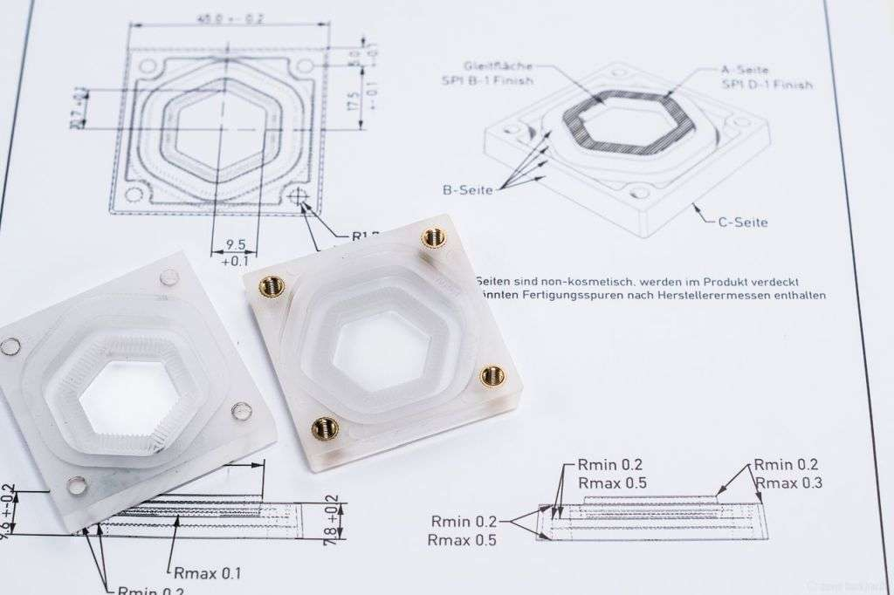
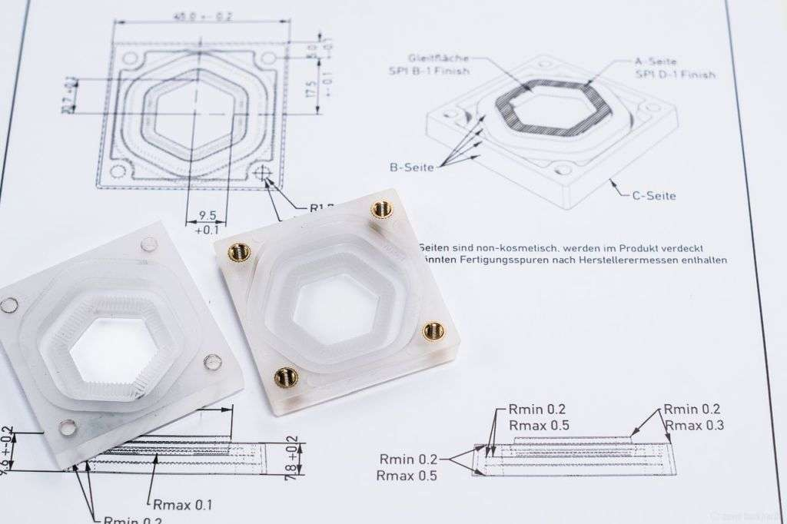
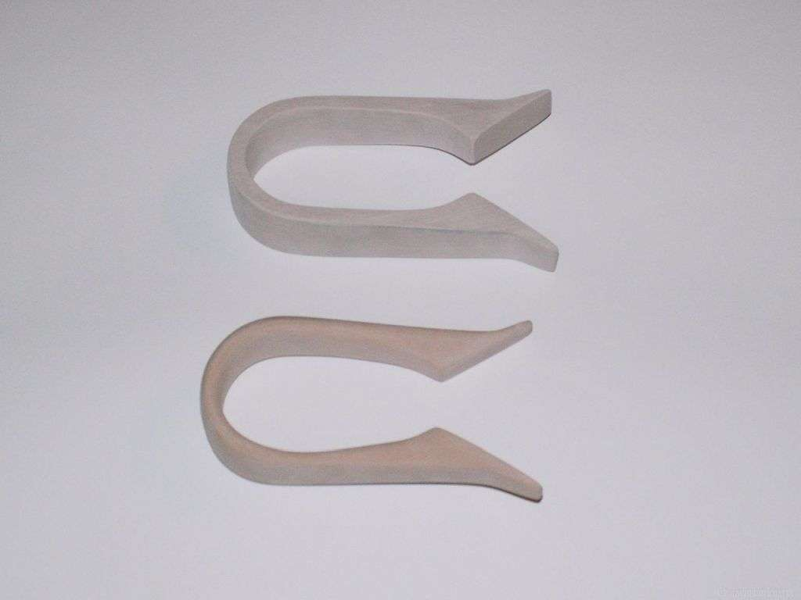
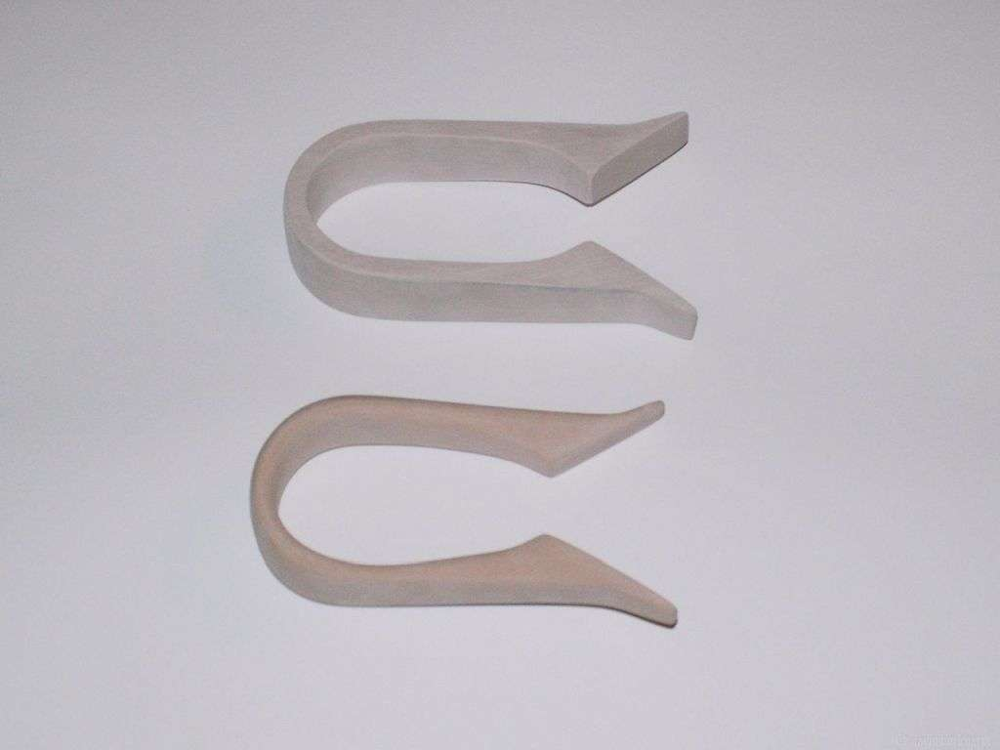
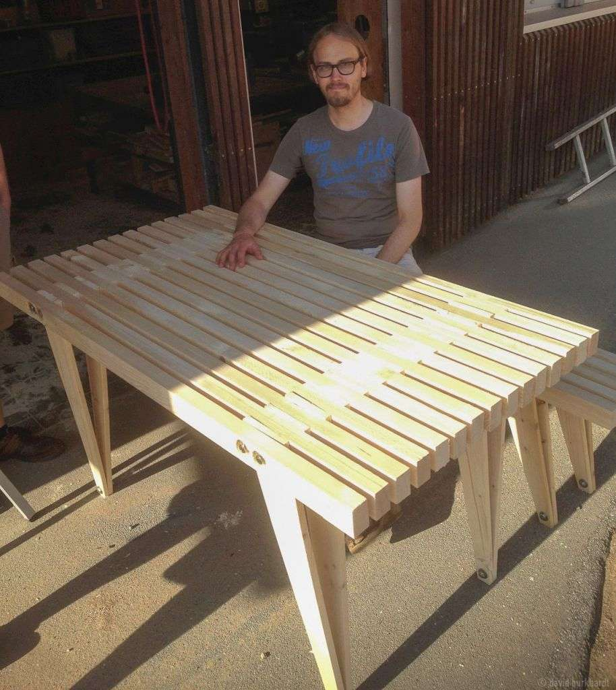

product design &


 



 



![Outdoor Furniture David Burkhardt This set of outdoor furniture can be made from just two types of recycled wood. The design is inspired by Will Holman's Scrap Table (Guerilla furniture), but uses other proportions and simplified materials: generic 4x6 roof lath and 2x10 cm board. The tapered legs are stressed to give necessary stiffness to the thin board. Contrary to Holmans design, the legs are not interconnected by threaded rods. Non-triangulated beams do not add much stability to the space frame, so they were left out. 2016 Open Source License: CC BY-NC-SA 2.5 construction wood 4x6cm and 2x10cm View this on Instructables ](img/original/outdoorfurniture.jpg){kind=link}
{kind=link}
![Trade Fair Booth David Burkhardt & Alexander Joly A trade fair booth for Protonet that embeds the protonet design language. It was used on the IMM Cologne 2015 and CeBit exhibitions. The booth was designed to be reusable for later exhibitions. Three slim hexagonal LED panels with sheetmetal enclosures were built from scratch by David Burkhardt, whereas the main walls of the booth were supplied by carpenter and designer Alexander Joly from Bauer + Planer. A custom trolley and storing boxes for transport, storage and reuse completed the set. 2015 Protonet GmbH antracite HPL chip board , powdercoated steel, aluminium, pmma Alexander Joly / Kurios Laserprodukt GmbH](img/original/trade_fair_booth.jpg){kind=link}
![Fruchtsuppe Alexej Hermann, David Burkhardt, Esther Stühmer, Philippe Nielsen, Seyon Han, Stella Dahms A soup bowl, serving twelve people. Eating out of the same giant bowl and its hidden excentric shape, sparked diverse philosophical, political and personal conversations among the ones using it. This bowl was part of a class on the topic of food in design and art, led by visting Professor Alexa Lixfeld. It was exhibited first at the DMY 2008 in Berlin, later at the Bitfilm Festival and at the HfbK yearly exhibition in Hamburg. 2008 Prof. Alexa Lixfeld HfbK University of Fine Arts of Hamburg laminated styrofoam](img/original/fruchtsuppe.jpg){kind=link}
David Burkhardt is a product designer based in Hamburg, Germany. At the age of 17, he was co-founder of Netthelp, a student company offering IT-services for schools which is still operating today. Later, still in high school, he founded his own company for cnc-milled water cooling devices and small form factor computers that won several awards.
David then went on to study industrial design at the University of fine arts of Hamburg, in the class of Prof. Glen-Oliver Löw. During the time at HfbK he also worked as a tutor for the CAD-labs and Mixed Media Workshop. As of 2012 he joined Protonet GmbH, a Hamburg based startup that would set an european crowd funding record and get chosen by the Y-Combinator accelerator program. Until 2016 he was responsible for the design of every major Protonet product, its manufacturing and process development.Teams that David Burkhardt has worked with:


Awards that Davids designs have won:

Silver & bronze & Audience prize at ADC awards show 2014
Patent of the month at Hamburg Chamber of Commerce, 06/2015
Award for eco-friendly product design of the BSU Hamburg 2013
Prize of the President of VDI e.V. at Jugend forscht federal competition 2005
1st Prize: Technology at Jugend forscht state competition Hamburg 2005